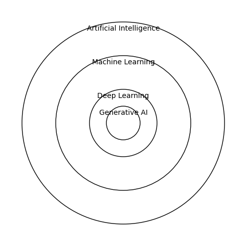
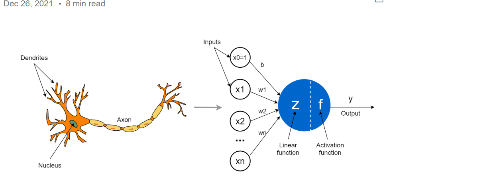

Deep Learning#
Atrificial Neural Network
Feedforward Networks
Convolutional Neural Networks (CNNs)
Recurrent Neural Networks (RNNs)
Training Techniques
Evaluation & Metrics
Tools & Frameworks
Click here for Contents
What is Deep Learning#
Deep Learning is a subset of Machine Learning (ML), which itself is a subset of Artificial Intelligence (AI). In simple terms:
AI: Machines doing tasks that require human intelligence (e.g., reasoning, planning, understanding language).
ML: Machines learning patterns from data without being explicitly programmed.
DL: Machines learning complex patterns from large amounts of data using structures called Neural Networks.
Think of it as a hierarchy of learning:
ML can learn simple patterns (like linear relationships).
DL can learn highly complex patterns, like recognizing faces, understanding speech, or translating languages.
A simple diagram (concentric concept circles):

Why “Deep#
The word “deep” in Deep Learning refers to the number of layers in the neural network:
A single layer → Shallow network (like simple ML models).
Multiple layers → Deep network (can capture complex features).
These layers are called hidden layers, sandwiched between input and output layers.
The Core Idea: Neural Networks#
At the heart of Deep Learning is the Neural Network (NN).
Intuition:#
Inspired by the human brain.
Composed of neurons (small computation units).
Each neuron receives inputs, applies a function, and passes the result forward.
Think of a neuron like a decision gate:
Take inputs (features from data).
Assign weights to each input (importance).
Sum them up and apply an activation function (decides if it “fires”).
Mathematical View of a Single Neuron#
A neuron calculates:
Where:
\(x_1, x_2, ..., x_n\) → Input features
\(w_1, w_2, ..., w_n\) → Weights (learned by the network)
\(b\) → Bias (adjustment term)
\(f\) → Activation function (non-linearity)
\(y\) → Output of the neuron

Activation Functions:#
Non-linear functions allowing networks to model complex patterns:
Sigmoid: Outputs between 0 and 1 (good for probabilities)
ReLU (Rectified Linear Unit): Most popular, outputs max(0, x)
Tanh: Outputs between -1 and 1
Without non-linear activation, multiple layers would collapse into a single linear layer → defeating the purpose of “deep” networks.
Forward and Backward Propagation#
Neural Networks learn through a feedback loop:
Forward Propagation: Input → Layer by layer → Output prediction
Loss Calculation: Compare prediction with actual label using a loss function (like MSE for regression, Cross-Entropy for classification).
Backward Propagation: Compute gradients of loss w.r.t weights → update weights using Gradient Descent.
Think of it like trial and error learning.
Types of Deep Learning Architectures#
Some common architectures:
Type |
Use Case |
|---|---|
CNN (Convolutional Neural Networks) |
Images, video, spatial data |
RNN (Recurrent Neural Networks) |
Sequential data, time series, text |
LSTM/GRU |
Long-term sequence modeling |
Transformer |
Language models, NLP (e.g., GPT, BERT) |
Each architecture is optimized for specific kinds of data and tasks.
Why Deep Learning Works Well#
Can automatically extract features from raw data (no manual feature engineering needed).
Excels at large datasets where traditional ML struggles.
Can learn highly non-linear relationships.
High-Level Workflow of Deep Learning#
Collect Data: Images, text, numerical, or audio data
Preprocess Data: Normalize, clean, augment
Define Model: Choose architecture and layers
Train Model: Forward + backward propagation
Evaluate Model: Accuracy, F1-score, etc.
Deploy Model: Use for prediction on new data
Summary
Deep Learning = Learning complex patterns using multi-layer neural networks. It:
Requires large data and computational power
Learns features automatically
Can solve problems that traditional ML cannot